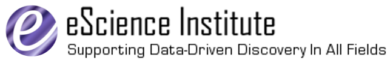

AstroData Hack Week is a week-long summer school / hack week /
unconference focused on astrostatistics and data-intensive astronomy.
The vision is to provide a space to encourange learning, research,
collaboration, and sharing of expertise, for the benefit of both
young and experienced astronomical researchers.
Registration details will be posted soon! Check back here, or follow
@AstroHackWeek on Twitter.
Schedule
Each day will consist of morning sessions devoted to learning
fundamentals of computational astronomy, and afternoon sessions
devoted to unstructured hacking and collaboration, with the potential
for informal breakout sessions on special topics of interest.
The following is an initial draft of the schedule; there may be slight
modifications in the weeks leading up to the conference.
Monday, September 15th
| 9:00am-noon |
Scientific Computing with Python
- Interactive Computing & Reproducible Research with IPython
- Effective Computing with NumPy
- Visualization with Matplotlib
- Exploring computational tools available in SciPy
|
| 1:00pm-5:30pm | Hack time & Breakouts |
| 5:30pm-6:00pm | Daily Wrap-up |
Tuesday, September 16th
| 9:00am-noon |
Classical Statistics & Modeling
- Intro to classical probability theory
- Maximum likelihood Optimization & Uncertainty Quantification
- Goodness of Fit and Hypothesis Testing
- Confidence Estimates using Bootstrap
|
| 1:00pm-5:30pm | Hack time & Breakouts |
| 5:30pm-6:00pm | Daily Wrap-up |
Wednesday, September 17th
| 9:00am-noon |
Bayesian Statistics & Modeling
- Bayes' Theorem and Bayesian probability
- Bayesian Priors
- Posterior optimization, marginalization, and Uncertainty Quantification
- Hypothesis Testing
- Intro to Markov Chain Monte Carlo (MCMC) sampling
|
| 1:00pm-5:30pm | Hack time & Breakouts |
| 5:30pm-6:00pm | Daily Wrap-up |
Thursday, September 18th
| 9:00am-noon |
Supervised Machine Learning & Model Fitting
- Supervised Machine Learning: Classification vs Regression
- A survey of Classification techniques
- A survey of Regression techniques
|
| 1:00pm-5:30pm | Hack time & Breakouts |
| 5:30pm-6:00pm | Daily Wrap-up |
| 7:00pm-late | off-site dinner and hackathon |
Friday, September 19th
| 10:00am-noon |
Unsupervised Machine Learning & Data Mining
- Dimensionality Reduction Algorithms
- Clustering Algorithms
- Density Estimation Algorithms
|
| 1:00pm-4:00pm | Hack time & Breakouts |
| 4:00pm-4:30pm | Week Wrap-up |
Because of the unique and unstructured nature of this hack week, we
suggest that you come prepared! Come with a project in mind, with data
to explore, with a colleague to collaborate with. This should not be a
week away from work, but a week to try some new approaches to your
current research topic!
People
The following folks have been involved with planning this event, and will be teaching the morning sessions and facilitating the afternoon hack times:

Željko Ivezić
Željko Ivezić


Željko Ivezić is a professor of astronomy at the University of Washington. His research interests are in detection, analysis and interpretation of electromagnetic radiation from astronomical sources. He is lead author of Statistics, Data Mining, and Machine Learning in Astronomy, a graduate textbook for data-intensive astronomy. He serves as the Project Scientist for the Large Synoptic Survey Telescope project and currently chairs the American Astronomical Society's Working Group on Astroinformatics and Astrostatistics.

David W. Hogg
David W. Hogg
David W. Hogg is a professor of Physics and Astronomy at New York University. His main research interests are in observational cosmology, especially approaches that use galaxies (including our own Milky Way) to infer the physical properties of the Universe. He also works on exoplanet measurement and discovery. In both areas, he is interested in developing the engineering systems that make these projects possible, for his group and for the astrophysics community as a whole. His research is supported by New York University, NASA, the NSF, and the Humboldt Foundation.
Hogg is working towards several comprehensive projects in observational astrophysics, including the measurement and simultaneous analysis of every galaxy (above some mass) in the observable Universe, every star (above some brightness) in our Galaxy, or every image (above some quality) taken by any astronomical camera. The comprehensive goals are long-term goals, but he is involved in present-day projects that work towards them, including Astrometry.net, Gaia, NYU-VAGC, and SDSS-III.

Phil Marshall
Phil Marshall
Phil Marshall is a staff scientist at the Kavli Institute for Particle Astrophysics and Cosmology, at SLAC, Stanford University. His main research interest is observational cosmology using gravitational lensing: weighing galaxies, and measuring the expansion rate of the Universe. He is involved in a number of surveys to find new lenses, using both ground-based and space telescopes - including designing the strong lensing science analysis for LSST.
Like all astrophysicists Marshall works in the low signal to noise regime, where information is at a premium and prior knowledge inevitably becomes important at some stage: developing probabilistic methods for data analysis is a continuing theme in his work.

Fernando Perez
Fernando Perez
Fernando Perez received his PhD in theoretical physics from the University of Colorado and then worked on numerical algorithm development at the Applied Mathematics Dept. at the same university. In 2001, he became involved with the nascent scientific Python community, and hasn't left. He created IPython while a graduate student looking for efficient interactive research tools. He continues to lead the IPython project along with a talented team that does all the hard work. He is currently a research scientist at the Helen Wills Neuroscience Institute at the University of California, Berkeley, focusing on the development of new tools for scientific computing and data science, drawing from problems in brain imaging and other disciplines.
Perez regularly lectures about scientific computing in Python, and is a member of the Python Software Foundation as well as a founding board member of the Numfocus Foundation. He is the recipient of the 2012 Award for the Advancement of Free Software from the Free Software Foundation.

Jake VanderPlas
Jake VanderPlas
Jake VanderPlas is currently the Director of Research in the Physical Sciences at the University of Washington’s eScience Institute, where his research is primarily in the area of novel statistical approaches to datasets from astronomy and other fields. He is co-author of the graduate-level text, Statistics, Data Mining, and Machine Learning in Astronomy, and is a maintainer and/or frequent contributor to many scientific open source Python projects, including SciPy, Scikit-learn, astroML, and others. He occasionally blogs about Python, machine learning, scientific visualization, open science, and related topics at Pythonic Perambulations.
Sponsors
This workshop is being organized as part of the Moore-Sloan Data Science Initiative, together with the University of Washington, University of California Berkeley, and New York University. It is made possible by the following sponsors:
